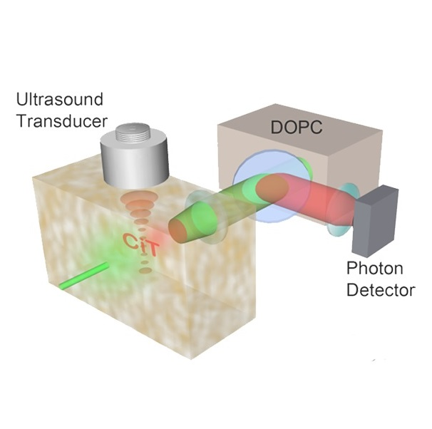
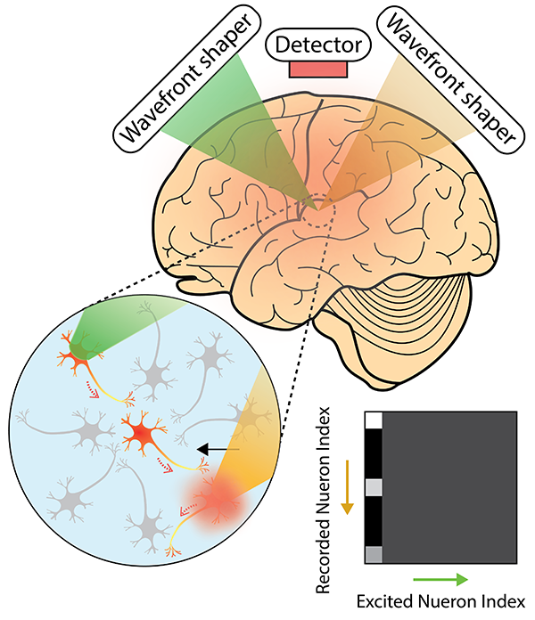

Research
Our group will explore the interdisciplinary research area of optics, biomedicine, neuroscience, and nanophotonics. Please find more information about our group below. If you are interested in joining us, please send an email to 'mooseok@kaist.ac.kr'. Any motivated candidates at the level of undergarduate, PhD or postdoc will be highly welcomed. Prior experience in optics is not necessary!
We are the research group led by Prof. Mooseok Jang ( [C.V.] and [Google Scholar]). We focus on the development of novel tools that combine optics, acoustics, and nanophotonics to tackle problems in biology and medicine.
-

Deep Tissue Imaging
Solving the problem of light scattering in biological tissues is a central goal in biomedical imaging. To date, the accessible depth of optical methods is limited to the superficial layer of biological tissues (approximately, 1 mm). We aim to increase the accessible depth through approaches based on wavefront manipulation and ultrasound-light interaction.
-

Optical Neuromodulation
Adult brain is composed more than 80 billion neurons and 100 trillion synapses (i.e. a junction between neurons). Revealing such complex connection represents an indispensable foundation to understand how our brain functions and to develop a treatment to brain diseases. Unlike conventional approaches in neuroscience, our approach, based on deep tissue light focusing, aims to interrogate the neuronal network in non-invasive and spatially-resolved (in the scale of a few tens of micrometers) manner.
-

Advanced Light Manipulation
For more than 50 years, the design paradigm of optical components has been dictated by a set of principles such as the basic rules of refraction and diffraction. We aim to combine the concepts emerged from two subfields of optics – complex wavefront shaping and metasurface – to challenge the conventional paradigm, and thereby unlock the optical space that is inaccessible with conventional optics.

People